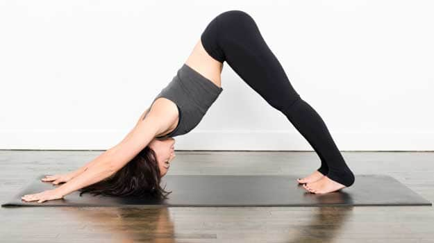

yogga poses

Adho Mukho Svanasana -Downward Facing Dog Pose
This pose stretches hamstrings, chest and lengthens the spine, providing additional blood flow to the head. It is will leave you feeling energized. Sit on your heels, stretch your arms forward on the mat and lower your head. Form a table, like pushing your hands, strengthening your legs and slowly raising your hips. Press your heels down, let your head hand freely and tighten your waist.
adho-mukho
NEXT